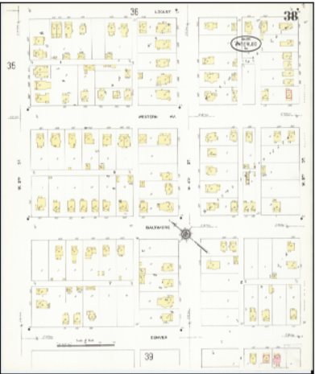
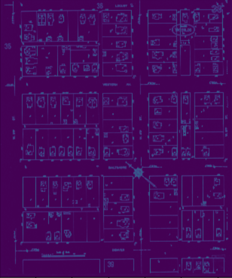
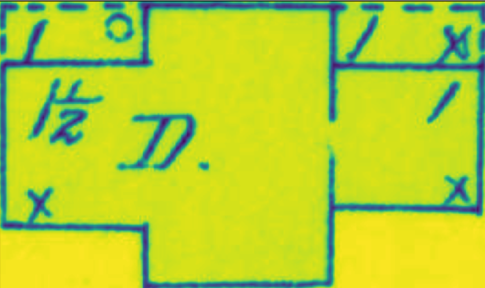
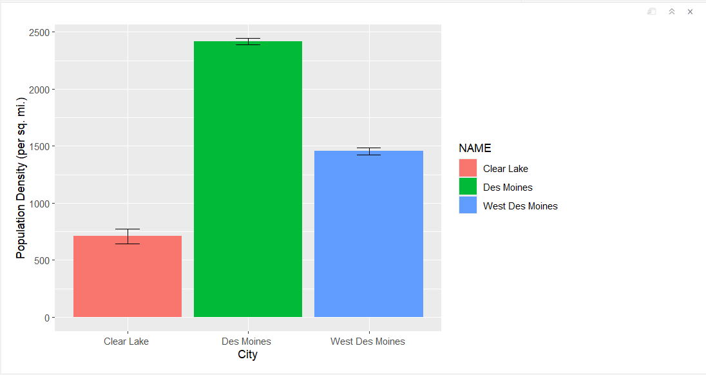
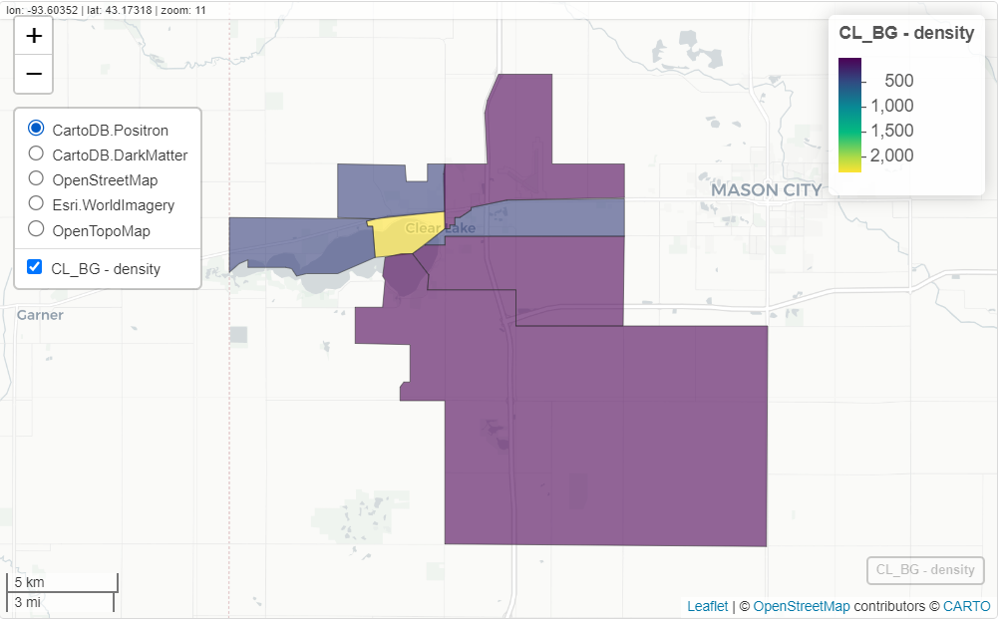
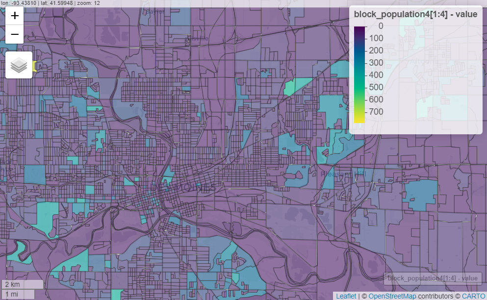
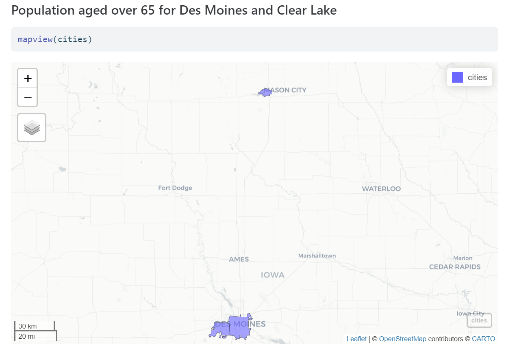
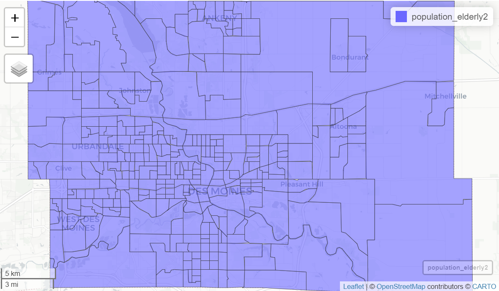

#|echo = FALSE
population_elderly2 <- readRDS(file = "Data/populationElderly2.RDS")Datacamp
DataCamp has been an incredible platform for acquiring new skills. Recently, we’ve made significant progress in learning about image processing and deep learning using Python and PyTorch—areas we were eager to explore.
In the Image Processing Chapter, I’ve delved into several powerful techniques:
- Global Thresholding
- Edge Detection
- Transformations
- Image Restoration
- Superpixel & Segmentation
- Finding Contours
- Morphology, etc
Turning to PyTorch, I’ve really broadened my set of practical skills in:
- Creating tensors from Numpy arrays
- The Sigmoid and Softmax functions
- Calculating cross entropy loss
- Using the MSELoss
- Implementing leaky Relu
- Calculating accuracy using Torchmetrics
- Building a forecasting RNN
- LSTM and GRU network, and lot more!
Our learning experience with DataCamp has been incredibly rewarding, giving us the chance to deepening our understanding of the technologies.
Image-Processing Activity:
Based on our Data Camp Training our Graduate lead Karthik has assigned us a Image Processing activity to work with.
We were given an image of a Waterloo Sanborn map to experiment with the image processing techniques we’ve learned.

Initially, we converted the original RGB image into a gray-scale image. Subsequently, we applied various techniques that I learned during the Data Camp sessions. For instance, we implemented Sobel edge detection to highlight edges within the image. we also explored morphological operations to produce an eroded version of the image, which helps in understanding structural elements. Additionally, we generated a gray-scale histogram to analyze the intensity distribution and applied a global threshold to segment the image based on intensity values.
Edge Detection:

Contour and Object Extracted:


We have provided the github link to Image-Processing Activity : https://github.com/NehaTiru/Image_Processing/blob/main/Untitled2.ipynb
Data Exploration
For our project we started by trying to find how small of data we could go for population data in terms of density, senior citizens, and income bracket. The idea is we want to be gather data at the smallest level we can with hopes of going down to the household level if possible. To do this we looked at two communities of varying sizes to see what level of data is available, Des Moines and Clear Lake.
Starting with population density this week, we started off at the city level using Census data from the ACS-5 year (2022) to make sure data was available and the results are displayed in the graph below.

Source: US Census ACS-5 (2022)
From there we moved on to see if data was available at the block group and block level, which data was found for population but coming up with density would be a bit time intensive especially in Des Moines. Below is the population density of the block groups in Clear Lake as well as the block layout of Des Moines in which the process of getting population density would be similar yet time consuming.
Clear Lake Block Group Population Density
 Source: US Census ACS-5 (2022)
Des Moines Block Population
 Source: Us Census 2020 Decennial Data


Moving forward we could look into remote sensing as a possibility to get even smaller data using machine learning. Similar to research that was done at the Nanjing University of Information Science and Technology for finding population density in Beijing City.
For More Information: https://www.mdpi.com/2072-4292/12/12/1910
Sources:
The demographic statistical atlas of the united states—Statistical atlas. (n.d.). Retrieved May 31, 2024, from https://statisticalatlas.com/place/Iowa/Des-Moines/Population
He, M., Xu, Y., & Li, N. (2020). Population spatialization in beijing city based on machine learning and multisource remote sensing data. Remote Sensing, 12(12), 1910. https://doi.org/10.3390/rs12121910
Grid view: Table b09020—Census reporter. Retrieved May 31, 2024, from https://censusreporter.org/data/table/?table=B09020&geo_ids=16000US1921000,150%7C16000US1921000&primary_geo_id=16000US1921000#valueType%7Cestimate
Census tabulation detail: Total Population. Census Reporter. Retrieved May 31, 2024, from https://censusreporter.org/tables/B01003/